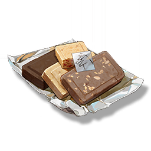

Energy Cookie
Supplies

Increases the defense of all Resonators in the team by 36% for 15 minutes, only effective for the player's Character in multiplayer games.
Calcharo has always had a soft spot for Huanglong's Food Ration Bar, believing that it can meet the basic hunger needs in the wild, and the taste is also unique.
However, in order to cater to the taste of some children in the mercenary group, Calcharo has made improvements on this basis, adding dried fruits, sugar beans and other seasonings, and designed a variety of flavors.